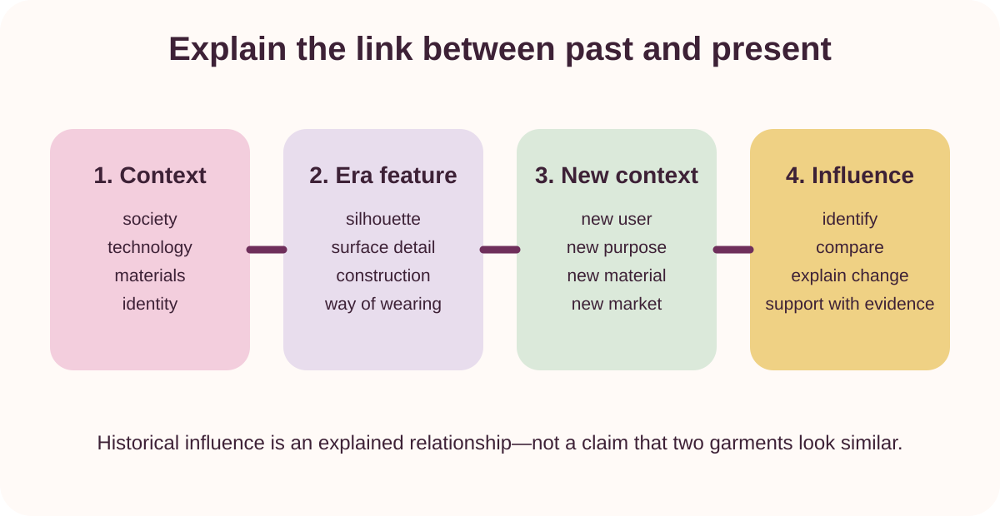
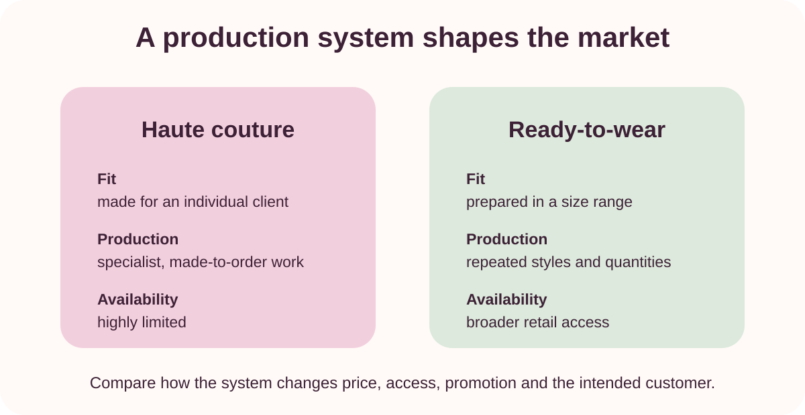
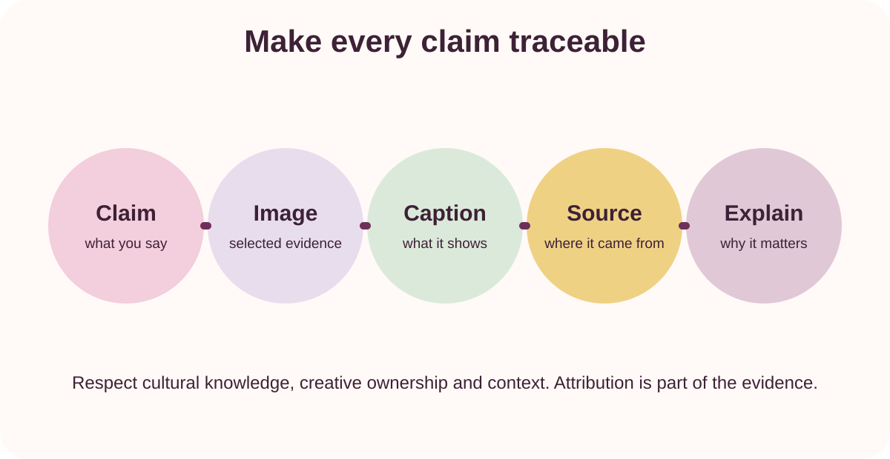

Slide 1 · Retrieval
What shapes fashion?
Without notes, list four forces that can influence clothing in a time and place. Add one garment feature that has returned in a later fashion context.
Source note
Based on the teacher-posted fashion history and designer information strand.
Slide 2 · Roadmap
Three connected questions
- How does historical context shape clothing?
- How do production systems and target markets shape designer practice?
- How can a magazine communicate evidence accurately and respectfully?
Your evidence destination is a two-part magazine plan.
Slide 3 · Theory 1
Past to present: explain the relationship

Move from context to a specific era feature, identify its new context and explain what changed. “It looks similar” is not enough.
Slide 4 · Theory 2
Production system and target market

Fit, production, availability and promotion help explain who a product is designed for and how the designer positions it.
Slide 5 · Theory 3
Make each claim traceable

Images are evidence only when the reader knows what they show, where they came from and why they support the explanation.
Slide 6 · Learning check
Choose the stronger explanation
A: “Modern designers use historical ideas because old fashions come back.”
B: “The designer adapts the earlier silhouette for a new user, material and market; the influence is visible in the changed proportion and way the garment is worn.”
Choose the stronger explanation and identify the evidence it would still need.
Slide 7 · Response model
Read → Select → Explain → Check
Slide 8 · Exit ticket
Your next evidence move
Name the fashion era and designer you plan to investigate. Then write:
- one historical feature worth explaining;
- one designer-practice question worth asking; and
- one image whose caption and source you must record.